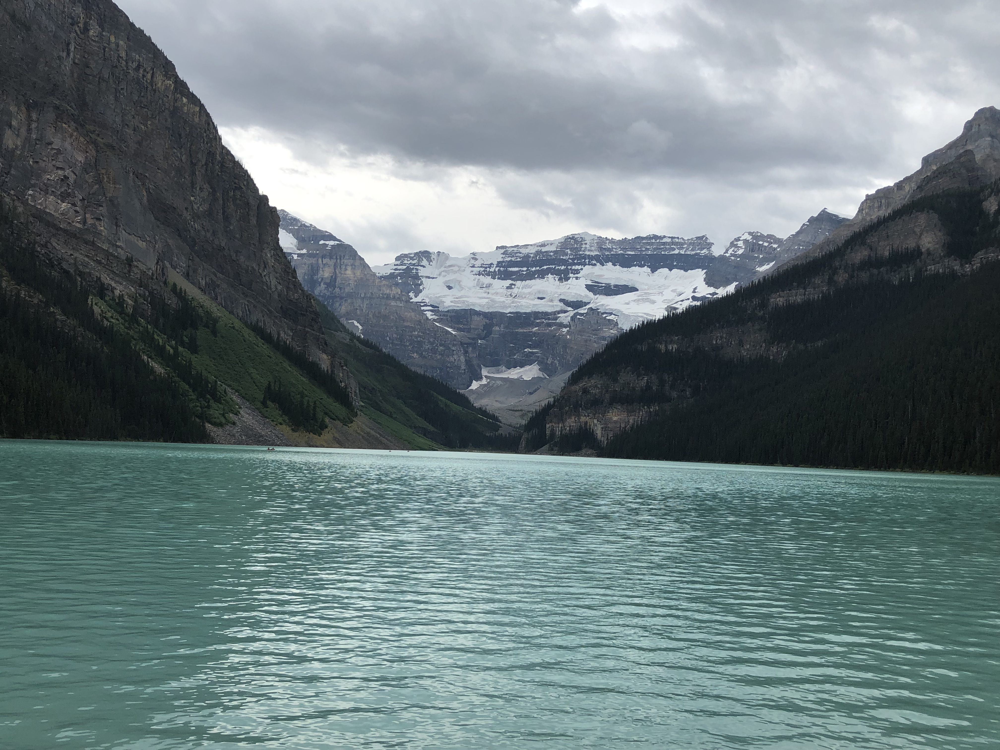

Naeti Dhebar
I have been a resident of Washington State for 5 years. I graduated from Skyline High School in June 2020. My hobbies are sports, singing, dancing, and spending time with my family. Over the past 5 years, I have struggled academically and in my personal life. Last year, I took a break for 6 months to work on my mental health and complete a certification of Google's UX Design through Coursera. I have also started getting professional photography and videography gigs. I am very passionate about digital art and creating pieces that will send a meaning to those who see it/read it.
